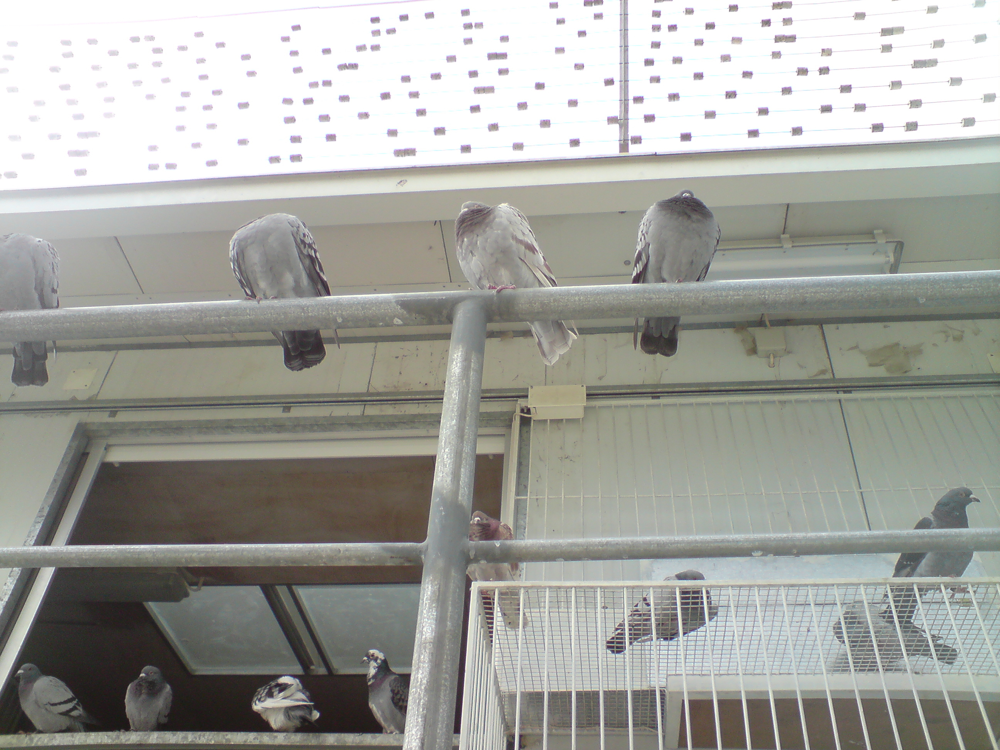
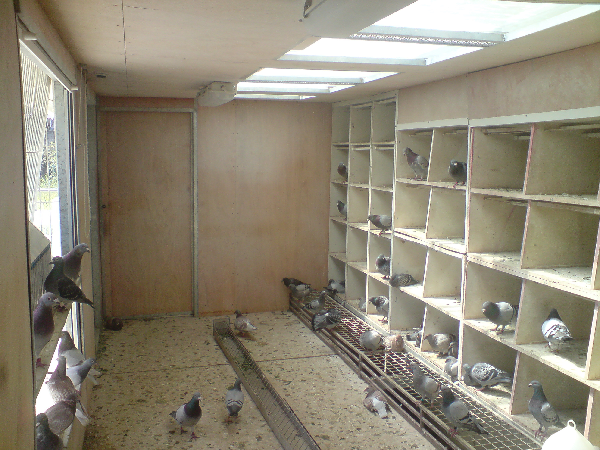
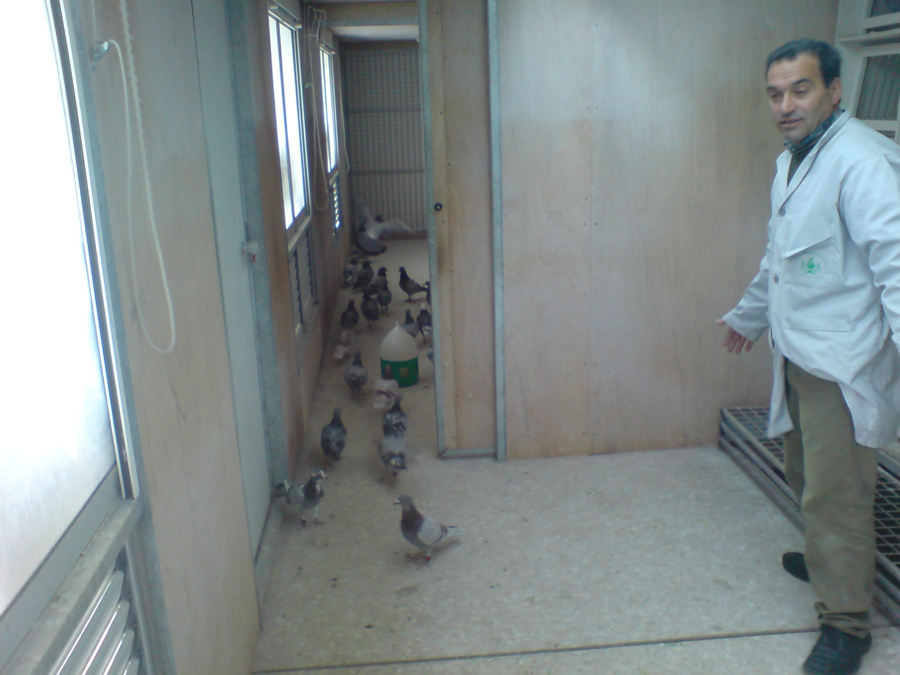
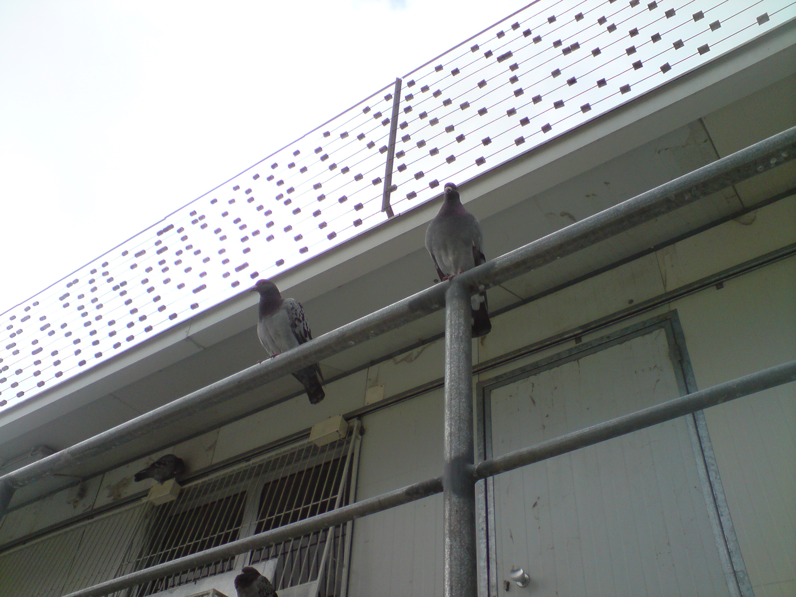
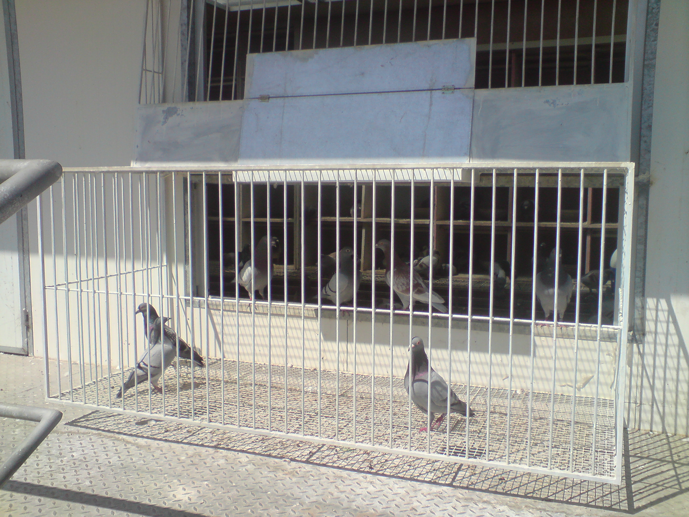
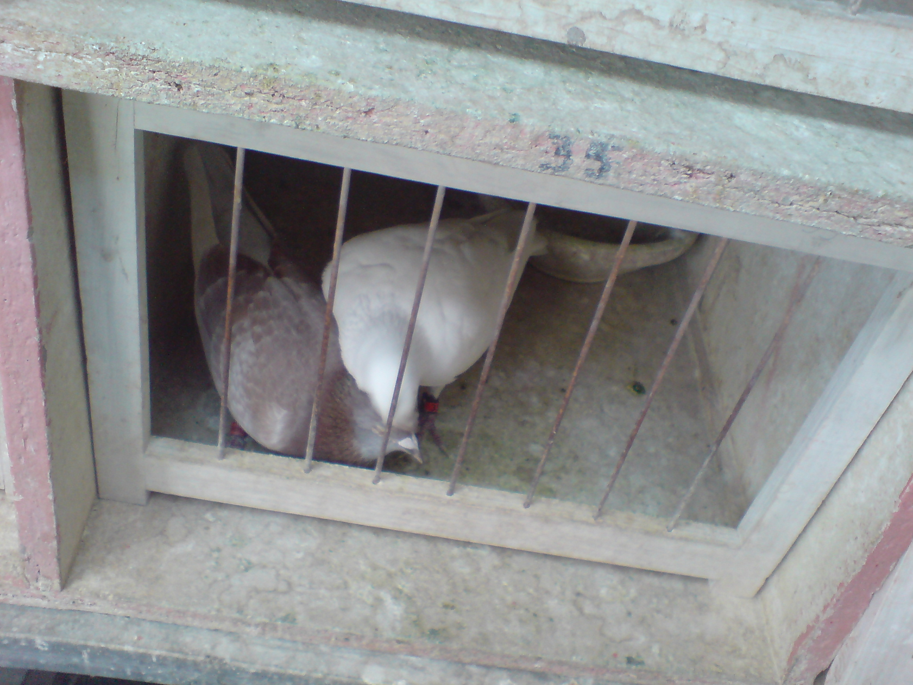
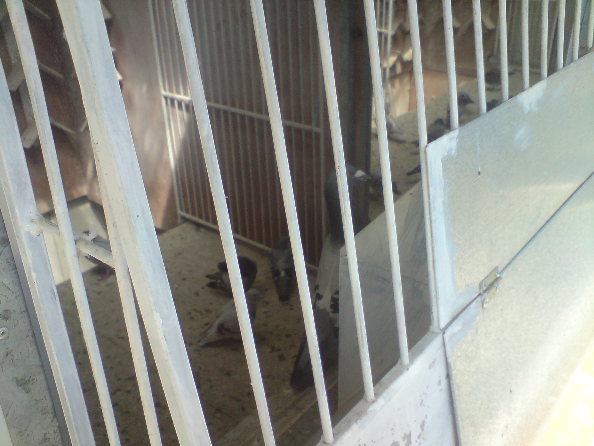
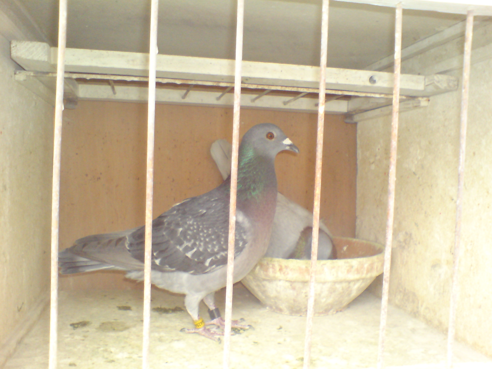

Uma paixão partilhada por dois colombófilos dedicados à arte e tradição da colombofilia.
A MGSad nasceu da amizade e paixão partilhada de dois colombófilos unidos pelo amor aos pombos-correio. Com anos de experiência e dedicação, a nossa sociedade preserva uma das tradições mais antigas e nobres da relação entre o Homem e as aves.
A colombofilia é muito mais do que um desporto — é uma arte que exige paciência, conhecimento e um profundo respeito pela natureza. Cada pombo é criado com cuidado e preparado para voos que testam os seus instintos naturais de orientação.
O nosso espaço
Um espaço cuidado ao detalhe, pensado para o bem-estar e performance dos nossos pombos.
O pombal da MGSad foi construído e aperfeiçoado ao longo dos anos, com especial atenção ao conforto, higiene e orientação das aves. Cada detalhe foi pensado para optimizar o desempenho dos nossos pombos nas provas.





Cada pombo tem a sua história, as suas características únicas e o seu lugar especial na nossa sociedade.


